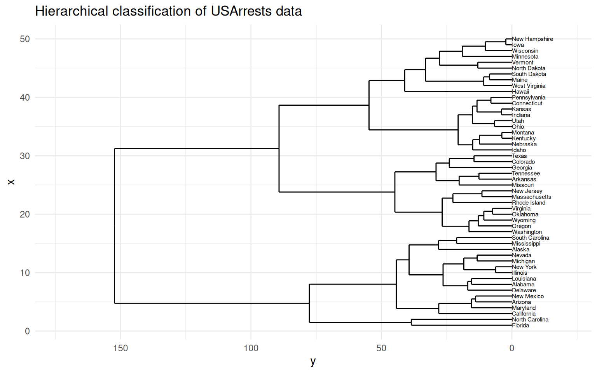

Hierarchical Clustering
Analyse de Données Master MIDS
Équipe EAD
2025-04-02
Hierarchical clustering
Hierarchical clustering […] is a method of cluster analysis which seeks to build a hierarchy of clusters
from Wikipedia
Recall that a clustering is a partition of some dataset
A partition \(D\) of \(\mathcal{X}\) is a refinement of another partition \(D'\) if every class in \(D\) is a subset of a class in \(D'\). Partitions \(D\) and \(D'\) are said to be nested
A hierarchical clustering of \(\mathcal{X}\) is a sequence of \(|\mathcal{X}|\) nested partitions of \(\mathcal{X}\), starting from the trivial partition into \(|\mathcal{X}|\) singletons and ending into the trivial partition in \(1\) subset ( \(\mathcal{X}\) itself)
A hierarchical clustering consists of \(|\mathcal{X}|\) nested flat clusterings
We will explore agglomerative or bottom-up methods to build hierarchical clusterings
Hierchical clustering and dendrogram
The result of hierarchical clustering is a tree where leafs are labelled by sample points and internal nodes correspond to merging operations
The tree conveys more information: if the tree is properly decorated, it is possible to reconstruct the different merging steps and to know which rule was applied when some merging operation was performed
The tree is called a dendrogram
Violent Crime Rates by US State
Description
This data set contains statistics, in arrests per 100,000 residents for assault, murder, and rape in each of the 50 US states in 1973. Also given is the percent of the population living in urban areas.Dendrogram and trees show up in several areas.
Classification and Regression trees play an important role in Machine Learning.
ggdendro and dendextend may also be used to manipulate regression trees
Cutting a dendrogram: getting a flat clustering
Building a dendrogram: inside
hclustDisplaying, reporting dendrograms
Cutting a dendrogram: Iris illustration
The famous (Fisher’s or Anderson’s) iris data set gives the measurements in centimeters of the variables sepal length and width and petal length and width, respectively, for 50 flowers from each of 3 species of iris. The species are Iris setosa, versicolor, and virginica.
The Iris flower data set is fun for learning supervised classification algorithms, and is known as a difficult case for unsupervised learning.
The Setosa species are distinctly different from Versicolor and Virginica (they have lower petal length and width). But Versicolor and Virginica cannot easily be separated based on measurements of their sepal and petal width/length.
<ScaleContinuousPosition>
Range:
Limits: 0 -- 1-
as.matrix(dist(iris[,1:4]))returns the matrix of pairwise distances - Default distance is Euclidean distance
- What about using
broom::augment? - There is no
augment.hclustmethod:No augment method for objects of class hclust
hclust pipeline
Inside ggdendro
What is an object of class dendro made of?
It a list of four elements:
segmentslabelsleaf_labelsclass
Element segments is a data frame with four columns. Each row represent a segment that is part of a graphical representation of the hierarchy. There are horizontal and vertical segments
Element labels is used to label the tree leafs.

Cutting a dendrogram: Iris illustration (continued)
Does the flat clustering obtained by cutting the dendrogram at some height reflect the partition into species?
Cutting a dendrogram: Iris illustration (continued)
Cutting a dendrogram: Iris illustration (continued)
Cutting a dendrogram: Iris illustration (continued)
Cutting a dendrogram: Iris illustration (continued)
Cutting a dendrogram: better Iris illustration (continued)
The dendextend package offers a set of functions for extending dendrogram objects in , letting you
- visualize and
- compare trees of hierarchical clusterings,
Features:
- Adjust a tree’s graphical parameters - the color, size, type, etc, of its branches, nodes and labels
- Visually and statistically compare different dendrograms to one another
Inside hclust
About class hclust
Results from function hclust() are objects of class hclust :
iris_hclust is an object of class hclust
Function cutree() returns a flat clustering of the dataset
Hierarchical clustering of USArrests
Rows: 50
Columns: 4
$ Murder <dbl> 13.2, 10.0, 8.1, 8.8, 9.0, 7.9, 3.3, 5.9, 15.4, 17.4, 5.3, 2.…
$ Assault <int> 236, 263, 294, 190, 276, 204, 110, 238, 335, 211, 46, 120, 24…
$ UrbanPop <int> 58, 48, 80, 50, 91, 78, 77, 72, 80, 60, 83, 54, 83, 65, 57, 6…
$ Rape <dbl> 21.2, 44.5, 31.0, 19.5, 40.6, 38.7, 11.1, 15.8, 31.9, 25.8, 2…About dendrograms (output dendro_data())
An object of class dendro is a list of 4 objects:
segmentslabelsleaf_labelsclass
Questions
How to build the dendrogram?
How to choose the cut?
Bird-eye view at hierarchical agglomerative clustering methods
All hierarchical agglomerative clustering methods (HACMs) can be described by the following general algorithm.
At each stage distances between clusters are recomputed by the Lance-Williams dissimilarity update formula according to the particular clustering method being used.
Identify the 2 closest points and combine them into a cluster (treating existing clusters as points too)
If more than one cluster remains, return to step 1.
Greed is good!
Hierarchical agglomerative clustering methods are examples of greedy algorithms
-
Greedy algorithms sometimes compute optimal solutions
Huffmann coding (Information Theory)
Minimum spanning tree (Graph algorithms)
-
Greedy algorithms sometimes compute sub-optimal solutions
Set cover (NP-hard problem)
…
-
Efficient greedy algorithms rely on ad hoc data structures
Priority queues
Union-Find
Algorithm (detailed)
Start with \((\mathcal{C}_{i}^{(0)})= (\{ \vec{X}_i \})\) the collection of all singletons.
-
At step \(s\), we have \(n-s\) clusters \((\mathcal{C}_{i}^{(s)})\):
Find the two most similar clusters according to a criterion \(\Delta\): \[(i,i') = \operatorname{argmin}_{(j,j')} \Delta(\mathcal{C}_{j}^{(s)},\mathcal{C}_{j'}^{(s)})\]
Merge \(\mathcal{C}_{i}^{(s)}\) and \(\mathcal{C}_{i'}^{(s)}\) into \(\mathcal{C}_{i}^{(s+1)}\)
Keep the \(n-s-2\) other clusters \(\mathcal{C}_{i''}^{(s+1)} = \mathcal{C}_{i''}^{(s)}\)
Repeat until there is only one cluster left
Analysis
Complexity: \(O(n^3)\) in general.
-
Can be reduced to \(O(n^2)\) (sometimes to \(O(n \log n)\))
if the number of possible mergers for a given cluster is bounded.
for the most classical distances by maintaining a nearest neighbors list.
Merging criterion based on the distance between points
Minimum linkage:
\[\Delta(\mathcal{C}_i, \mathcal{C}_j) =\min_{\vec{X}_i \in \mathcal{C}_i} \min_{\vec{X}_j \in \mathcal{C}_j} d(\vec{X}_i, \vec{X}_j)\]
Maximum linkage:
\[\Delta(\mathcal{C}_i, \mathcal{C}_j) = \max_{\vec{X}_i \in \mathcal{C}_i} \max_{\vec{X}_j \in \mathcal{C}_j} d(\vec{X}_i, \vec{X}_j)\]
Average linkage:
\[\Delta(\mathcal{C}_i, \mathcal{C}_j) =\frac{1}{|\mathcal{C}_i||\mathcal{C}_j|} \sum_{\vec{X}_i \in \mathcal{C}_i}\sum_{\vec{X}_j \in \mathcal{C}_j} d(\vec{X}_i, \vec{X}_j)\]
Ward’s criterion : minimum variance/inertia criterion
\(\Delta(\mathcal{C}_i, \mathcal{C}_j) = \sum_{\vec{X}_i \in \mathcal{C}_i} \left( d^2(\vec{X}_i, \mu_{\mathcal{C}_i \cup \mathcal{C}_j} ) - d^2(\vec{X}_i, \mu_{\mathcal{C}_i}) \right) +\)
\(\qquad\qquad \qquad \sum_{\vec{X}_j \in \mathcal{C}_j} \left( d^2(\vec{X}_j, \mu_{\mathcal{C}_i \cup \mathcal{C}_j} ) - d^2(\vec{X}_j, \mu_{\mathcal{C}_j}) \right)\)
If \(d\) is the euclidean distance
\[\Delta(\mathcal{C}_i, \mathcal{C}_j) = \frac{ |\mathcal{C}_i||\mathcal{C}_j|}{|\mathcal{C}_i|+ |\mathcal{C}_j|} d^2(\mu_{\mathcal{C}_i}, \mu_{\mathcal{C}_j})\]
Lance-Williams update formulae
Suppose that clusters \(C_{i}\) and \(C_{j}\) were next to be merged
At this point, all of the current pairwise cluster distances are known
The recursive update formula gives the updated cluster distances following the pending merge of clusters \(C_{i}\) and \(C_{j}\)
Let
\(d_{ij}, d_{ik}\), and \(d_{jk}\) be shortands for the pairwise distances between clusters \(C_{i}, C_{j}\) and \(C_{k}\)
\(d_{{(ij)k}}\) be shortand for the distance between the new cluster \(C_{i}\cup C_{j}\) and \(C_{k}\) ( \(k\not\in \{i,j\}\) )
Lance-Williams update formulae (continued)
An algorithm belongs to the Lance-Williams family if the updated cluster distance \(d_{{(ij)k}}\) can be computed recursively by
\[d_{(ij)k} = \alpha _{i}d_{ik}+ \alpha _{j}d_{jk}+ \beta d_{ij}+ \gamma |d_{ik}-d_{jk}|\]
where \(\alpha_{i},\alpha _{j},\beta\) , and \(\gamma\) are parameters, which may depend on cluster sizes, that together with the cluster distance function \(d_{ij}\) determine the clustering algorithm.
Lance-Williams update formula for Ward’s criterion
\[\begin{array}{rl}d\left(C_i \cup C_j, C_k\right) & = \frac{n_i+n_k}{n_i+n_j+n_k}d\left(C_i, C_k\right) +\frac{n_j+n_k}{n_i+n_j+n_k}d\left(C_j, C_k\right) \\ & \phantom{==}- \frac{n_k}{n_i+n_j+n_k} d\left(C_i, C_j\right)\end{array}\]
\[\alpha_i = \frac{n_i+n_k}{n_i+n_j+n_k} \qquad \alpha_j = \frac{n_j+n_k}{n_i+n_j+n_k}\qquad \beta = \frac{- n_k}{n_i+n_j+n_k}\]
An unfair quotation
Ward’s minimum variance criterion minimizes the total within-cluster variance .fr[Wikipedia]
Is that correct?
If corrected, what does it mean?
What happens in Ward’s method?
At each step find the pair of clusters that leads to minimum increase in total within-cluster variance after merging .fr[Wikipedia]
This increase is a weighted squared distance between cluster centers .fr[Wikipedia]
At the initial step, all clusters are singletons (clusters containing a single point). To apply a recursive algorithm under this objective function, the initial distance between individual objects must be (proportional to) squared Euclidean distance.
Views on Inertia:
\[I = \frac{1}{n} \sum_{i=1}^n \|\vec{X}_i - \vec{m} \|^2\]
where \(\vec{m} = \sum_{i=1}^n \frac{1}{n}\vec{X}_i\)
\[I = \frac{1}{2n^2} \sum_{i,j} \|\vec{X}_i - \vec{X}_j\|^2\]
Twice the mean squared distance to the mean equals the mean squared distance between sample points
Decompositions of inertia (Huyghens formula)
Sample \(x_1,\ldots, x_{n+m}\) with mean \(\bar{X}_{n+m}\) and variance \(V\)
Partition \(\{1,\ldots,n+m\} = A \cup B\) with \(|A|=n, |B|=m\), \(A \cap B =\emptyset\)
Let \(\bar{X}_n = \frac{1}{n}\sum_{i \in A} X_i\) and \(\bar{X}_m=\frac{1}{m}\sum_{i \in B}X_i\) \[\bar{X}_{n+m} = \frac{n}{n+m} \bar{X}_{n} +\frac{m}{n+m} \bar{X}_{m}\]
Let \(V_A\) be the variance of \((x_i)_{i\in A}\), \(V_B\) be the variance of \((x_i)_{i\in B}\)
Decompositions of inertia (Huyghens formula)
Let \(V_{\text{between}}\) be the variance of a ghost sample with \(n\) copies of \(\bar{X}_n\) and \(m\) copies of \(\bar{X}_m\) \[V_{\text{between}} = \frac{n}{n+m} (\bar{X}_n -\bar{X}_{n+m})^2 + \frac{m}{n+m} (\bar{X}_m -\bar{X}_{n+m})^2\]
Let \(V_{\text{within}}\) be the weighted mean of variances within classes \(A\) and \(B\) \[V_{\text{within}} = \frac{n}{n+m} V_A + \frac{m}{n+m} V_B\]
Decompositions of inertia
Proposition: Huyghens formula I
\[V = V_{\text{within}} + V_{\text{between}}\]
Huyghens formula can be extended to any number of classes
Proposition: Huyghens (II)
Sample \(\vec{x}_1, \ldots,\vec{x}_n\) from \(\mathbb{R}^p\) with mean \(\bar{X}_n\), inertia \(I\).
Let \(A_1, A_2\ldots, A_k\) be a partition of \(\{1,\ldots,n\}\).
Let \(I_\ell\) (resp. \(\bar{X}^\ell\)) be the inertia (resp. the mean) of sub-sample \(\vec{x}_i, i\in A_\ell\)
Let \(I_{\text{between}}\) be the inertia of the ghost sample, formed by \(|A_1|\) copies of \(\bar{X}^1\), \(|A_2|\) copies of \(\bar{X}^2\), … \(|A_k|\) copies of \(\bar{X}^k\)
Let \(I_{\text{within}} = \sum_{\ell=1}^k \frac{|A_\ell|}{n} I_\ell\)
\[I = I_{\text{within}} + I_{\text{between}}\]
Comparing dendrograms
Cophenetic disimilarity
Given a dendrogram, the cophenetic disimilarity between two sample points \(x, x'\) is the intergroup disimilarity at which observations \(x\) and \(x'\) are first joined.
Proposition
A cophenetic disimilarity has the ultrametric property
Cophenetic correlation coefficient
The cophenetic correlation coefficient measures how faithfully a dendrogram preserves the pairwise distances between the original unmodeled data points
Computing cophenetic correlation coefficient
In use the dendextend package
| single | complete | average | mcquitty | ward.D | centroid | median | ward.D2 |
|---|---|---|---|---|---|---|---|
| 0.86 | 0.73 | 0.88 | 0.87 | 0.86 | 0.87 | 0.86 | 0.87 |

How to apply general algorithm?
Lance-Williams dissimilarity update formula calculates dissimilarities between a new cluster and existing points, based on the dissimilarities prior to forming the new cluster
This formula has 3 parameters
Each HACM is characterized by its own set of Lance-Williams parameters
Implementations of the general algorithm
Stored matrix approach
Use matrix, and then apply Lance-Williams to recalculate dissimilarities between cluster centers. Storage \(O(N^2)\) and time at least \(O(N^2)\), but is \(\Theta(N^3)\) if matrix is scanned linearly
Stored data approach
\(O(N)\) space for data but recompute pairwise dissimilarities, needs \(\Theta(N^3)\) time
Sorted matrix approach
\(O(N^2)\) to calculate dissimilarity matrix, \(O(N^2 \log N)\) to sort it, \(O(N^2)\) to construct hierarchy, but one need not store the data set, and the matrix can be processed linearly, which reduces disk accesses
Agglomerative Clustering Heuristic
Start with very small clusters (a sample point by cluster?)
Merge iteratively the most similar clusters according to some greedy criterion \(\Delta\).
Generates a hierarchy of clusterings instead of a single one.
Need to select the number of cluster afterwards.
Several choice for the merging criterion
-
Examples:
Minimum Linkage: merge the closest cluster in term of the usual distance
Ward’s criterion: merge the two clusters yielding the less inner inertia loss (minimum variance criterion)
Packages
The End
Hierarchical Clustering

MA7BY020 – Analyse de Données – M1 MIDS – UParis Cité